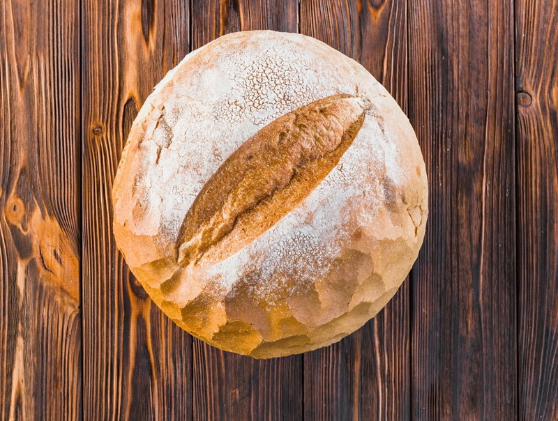

Freshly Baked Happiness

At Bread Bliss, we believe in the magic of freshly baked bread. From warm loaves to crispy buns, our recipes are crafted with love, tradition, and the finest ingredients.
Our journey started in a small kitchen and has grown into a cozy space where families gather and friends connect over the comforting taste of bread.
Whether you're here for breakfast, lunch, or just a snack — you're always welcome at Bread Bliss.
Bread Bliss began with a passion for baking and a dream to bring smiles through food. From humble beginnings, we’ve grown into one of the most loved bread spots in town. Our team is made up of passionate bakers, customer lovers, and flavor creators.
✅ Freshly baked daily
✅ Natural ingredients, no additives
✅ Affordable and delicious
✅ Cozy environment and friendly service
Bread Bliss Bakery, 123 Toast Avenue, Ondo
Open Monday to Saturday: 7:00am – 8:00pm